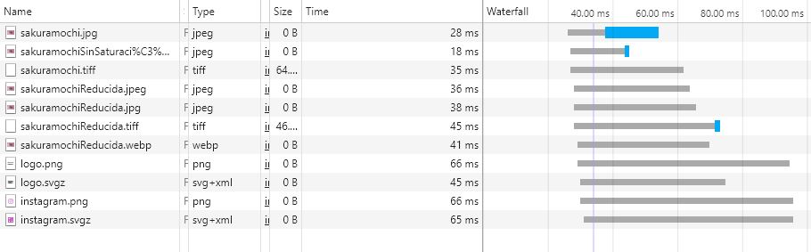

Imagen sin modificaciones:
tamaño: 221 KB (226.784 bytes)
Dimensiones originales: 1280 x 853
Imagen reduciendo la saturacion:

tamaño: 221 KB (226.784 bytes)
Dimensiones originales: 1280 x 853
Imagen en formato TIFF:
tamaño: 1,29 MB (1.359.140 bytes)
Dimensiones originales: 1280 x 853
El formato tiff solo es visible por el navegador edge
Imagen en formato WebP:
tamaño: 110 KB (112.744 bytes)
Dimensiones originales: 1280 x 853
El formato tiff solo es visible por el navegador chrome
Imagenes reducidas en tamaño y saturacion:
formato: jpeg
tamaño: 7,06 KB (7.247 bytes)
Dimensiones: 200 x 133

formato: jpeg
tamaño: 7,07 KB (7.247 bytes)
Dimensiones: 200 x 133
formato: tiff
tamaño: 45,9 KB (47.072 bytes)
Dimensiones: 200 x 133
El formato tiff solo es visible por el navegador edge
Formato: webP
tamaño: 5,69 KB (5.832 bytes)
Dimensiones: 200 x 133
El formato webp solo es visible por el navegador chrome
LOGOTIPO:
Logotipo sin vectorizar:
Logotipo vectorizado
ICONO:
Icono sin vectorizar:

Icono vectorizado

Tiempo de carga:
Las imagenes que mas tardan en cargar son aquellas que tienen el formato png o svgz